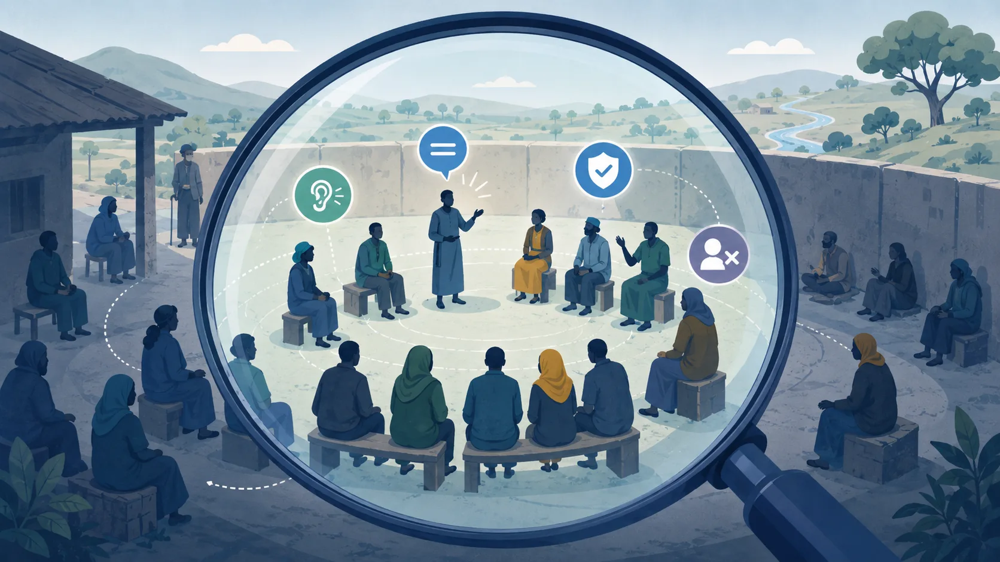

POWER & PARTICIPATION
Look beyond who attended
Being invited into a meeting does not always mean having equal influence over what is discussed or whose voice is heard.

Jiru Amba consultation
Young women and displaced youth are present, the floor is formally open, but participation and agenda space are uneven.
Interpretation feedback
We observed
Different groups were present, but agenda space and participation were uneven.
The evidence supports
Hidden and invisible power are affecting meaningful participation.
We should not assume
That every quiet participant has the same reason for staying silent.
PRACTICE PRINCIPLE
Participation is more than presence
Participation is not only about who attends. Look at who shapes the agenda, who feels able to speak, whose priorities influence decisions, and what evidence supports your interpretation.